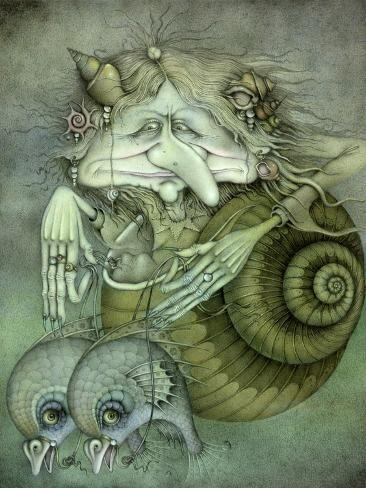

Audio reading slot ready for poetry/poems/the-witch-of-the-nautilus-depths.mp3.
The Witch of the Nautilus Depths
In the hush where drowned cathedrals weep, she rules from a spire of spiraled sleep— a witch with a crown of knotted tides, her laughter the groan of a sinking ship’s side. Her skin is the sheen of oil on waves, her nails, barnacle-sharp, carve sailors’ graves. The nautilus curls where her heartbeat thrums, a clockwork of echoes where lost breath hums. She brews the storm in a clamshell bowl, stirs lightning with fingers woven from stolen souls. Her voice is the net that hauls men deep, a lullaby sung to the hulls that weep. Touch her—you’ll wear the sea’s cold brand, salt in your lungs, her mark on your hand. But kneel with a gift she cannot resist, and she’ll bare you the pearls in her fathomless fist.